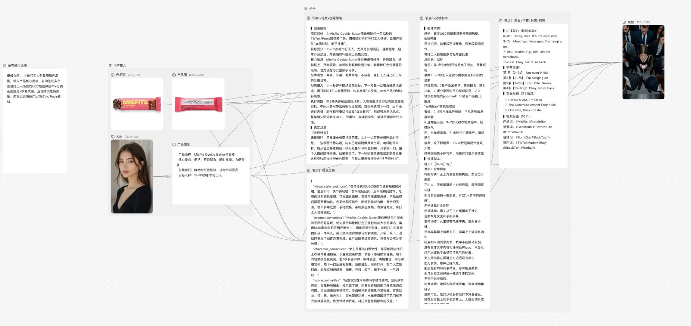

跨境 UGC 短视频工作流
输入
产品图 × 2人物图 × 1产品信息：名称、卖点、包装特征、目标人群
输出：一条 8 秒竖版 UGC 短视频，带旁白、字幕、封面标题和标签。左边就是成片。
给跨境卖家用。痛点：一个产品做一条 UGC 短视频，要写创意、分镜、文案再生成，每次从头来。做成模板后换产品、换人物，流程不变，成片照出。元极 AI 公开模板，配了一条教程视频。
怎么实现
六个 Agent 串成一条线
Before一句提示词，直接要视频After先拆流程，每步一个 Agent，上一步的输出是下一步的输入
00产品分析Agent
- 读图和文字，整理品类、包装特征、外观，总结核心卖点
- 三条约束：只能来自上传素材、包装特征写具体、卖点不夸大
01创意策略Agent
- 判断这个产品适合放进哪种 UGC 场景，定目标受众和情绪
02视觉风格Agent
- 画面质感、色调、人物状态、产品怎么出现，输出结构化描述
03分镜脚本Agent
- 逐秒写：镜头、人物动作、产品何时入画、音效
04旁白、字幕、标签Agent
- 按时间轴写旁白和字幕，给三个封面标题、十个标签
05生成视频模型 + 人
- 前面所有输出合成提示，生成成片；人看结果，不对就回去改 Agent
调出来的，不是写出来的
成片出一个问题，就回到对应节点加一条约束，再跑。

问题 01场景跑到了厕所里，食品和卫生间放在一起→ 改 01 创意策略加一条：食品类不得出现在卫生间等场景，场景必须和「吃」不冲突

问题 02撕包装穿帮，包装撕开的方式和实物不符→ 改 00 产品分析 + 03 分镜包装特征写具体到开口位置；开袋动作一气呵成，不拆步骤

问题 03手机屏幕变形，文字糊成一团→ 改 02 视觉风格屏幕只给模糊的信息流和红点，不要求可读文字
问题 04结尾把咬过的蛋白棒递给同事，逻辑突兀→ 改 03 分镜结尾动作限定为女主自己完成，不涉及第二人

传播
模板元极 AI 公开上线
传自己的产品图和人物图即可跑通
一句话流程拆清楚，才有可复用的工作流
人负责拆流程和定约束，AI 负责执行每一步
工具
元极 AI 造境画布 · 多 Agent 节点 · 图生视频